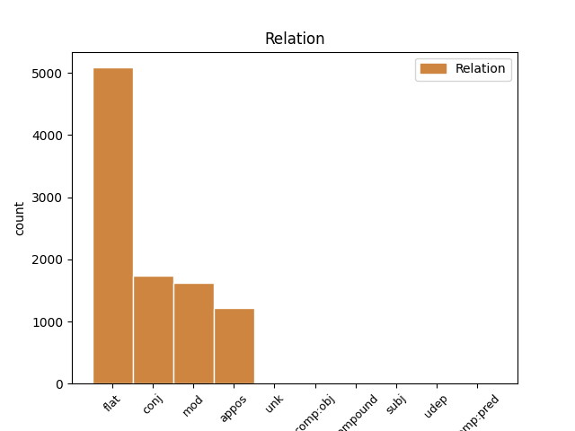
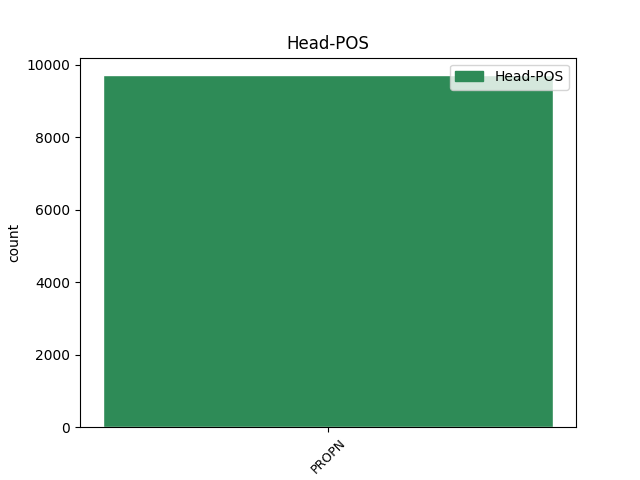
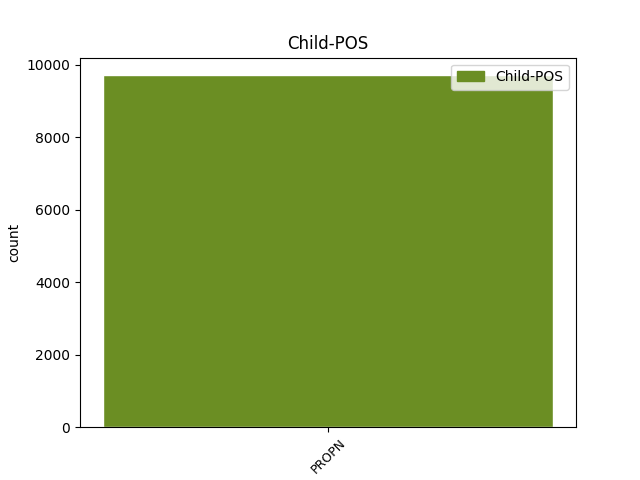

Distribution of features within this leaf



Agreement Rules sorted by frequency.
- When the dependent token is the flat multiword expression(flat) of the head token, and the head token is PROPN and the dependent token is PROPN.
1 Schon _ _ _ _ 0 _ _ _
2 früh _ _ _ _ 0 _ _ _
3 entwickelte _ _ _ _ 0 _ _ _
4 er _ _ _ _ 0 _ _ _
5 eine _ _ _ _ 0 _ _ _
6 Zuneigung _ _ _ _ 0 _ _ _
7 zu _ _ _ _ 0 _ _ _
8 den _ _ _ _ 0 _ _ _
9 Meteora Meteora PROPN NN Case=Dat|Gender=Masc|Number=Plur 0 _ _ _
10 - _ _ _ _ 0 _ _ _
11 Klöstern Kloster PROPN NN Case=Dat|Gender=Masc|Number=Plur 9 flat _ SpaceAfter=No
12 , _ _ _ _ 0 _ _ _
13 von _ _ _ _ 0 _ _ _
14 denen _ _ _ _ 0 _ _ _
15 einige _ _ _ _ 0 _ _ _
16 unter _ _ _ _ 0 _ _ _
17 der _ _ _ _ 0 _ _ _
18 Herrschaft _ _ _ _ 0 _ _ _
19 seines _ _ _ _ 0 _ _ _
20 Vaters _ _ _ _ 0 _ _ _
21 entstanden _ _ _ _ 0 _ _ _
22 und _ _ _ _ 0 _ _ _
23 die _ _ _ _ 0 _ _ _
24 auch _ _ _ _ 0 _ _ _
25 er _ _ _ _ 0 _ _ _
26 finanziell _ _ _ _ 0 _ _ _
27 unterstützte _ _ _ _ 0 _ _ _
28 . _ _ _ _ 0 _ _ _
1 Der _ _ _ _ 0 _ _ _
2 Kleine _ _ _ _ 0 _ _ _
3 Samurai _ _ _ _ 0 _ _ _
4 ist _ _ _ _ 0 _ _ _
5 ein _ _ _ _ 0 _ _ _
6 offizielles _ _ _ _ 0 _ _ _
7 Sportabzeichen _ _ _ _ 0 _ _ _
8 des _ _ _ _ 0 _ _ _
9 Deutschen deutsch PROPN ADJA Case=Gen|Gender=Masc|Number=Sing 10 mod _ _
10 Karate Karate PROPN NN Case=Gen|Gender=Masc|Number=Sing 0 _ _ _
11 Verbands _ _ _ _ 0 _ _ _
12 für _ _ _ _ 0 _ _ _
13 Kinder _ _ _ _ 0 _ _ _
14 zwischen _ _ _ _ 0 _ _ _
15 sechs _ _ _ _ 0 _ _ _
16 und _ _ _ _ 0 _ _ _
17 14 _ _ _ _ 0 _ _ _
18 Jahren _ _ _ _ 0 _ _ _
19 . _ _ _ _ 0 _ _ _
1 Er _ _ _ _ 0 _ _ _
2 stammt _ _ _ _ 0 _ _ _
3 aus _ _ _ _ 0 _ _ _
4 dem _ _ _ _ 0 _ _ _
5 magdeburgischen _ _ _ _ 0 _ _ _
6 Uradelsgeschlecht _ _ _ _ 0 _ _ _
7 Graf _ _ _ _ 0 _ _ _
8 von _ _ _ _ 0 _ _ _
9 Wartensleben _ _ _ _ 0 _ _ _
10 und _ _ _ _ 0 _ _ _
11 war _ _ _ _ 0 _ _ _
12 der _ _ _ _ 0 _ _ _
13 Sohn _ _ _ _ 0 _ _ _
14 des _ _ _ _ 0 _ _ _
15 königlich _ _ _ _ 0 _ _ _
16 preußischen _ _ _ _ 0 _ _ _
17 Kammerherrn _ _ _ _ 0 _ _ _
18 und _ _ _ _ 0 _ _ _
19 Generalleutnants _ _ _ _ 0 _ _ _
20 Gustav _ _ _ _ 0 _ _ _
21 Graf _ _ _ _ 0 _ _ _
22 von _ _ _ _ 0 _ _ _
23 Wartensleben _ _ _ _ 0 _ _ _
24 ( _ _ _ _ 0 _ _ _
25 1796-1886 _ _ _ _ 0 _ _ _
26 ) _ _ _ _ 0 _ _ _
27 und _ _ _ _ 0 _ _ _
28 der _ _ _ _ 0 _ _ _
29 Elisabeth _ _ _ _ 0 _ _ _
30 von _ _ _ _ 0 _ _ _
31 Goldbeck Goldbeck PROPN NE Case=Dat|Gender=Masc|Number=Sing 0 _ _ _
32 und _ _ _ _ 0 _ _ _
33 Reinhard Reinhard PROPN NE Case=Dat|Gender=Masc|Number=Sing 31 conj _ _
34 ( _ _ _ _ 0 _ _ _
35 1803-1869 _ _ _ _ 0 _ _ _
36 ) _ _ _ _ 0 _ _ _
37 . _ _ _ _ 0 _ _ _
1 Kleszczele Kleszczele PROPN NE Case=Nom|Gender=Masc|Number=Sing 0 _ _ _
2 { _ _ _ _ 0 _ _ _
3 { _ _ _ _ 0 _ _ _
4 IPA IPA PROPN NE Case=Nom|Gender=Masc|Number=Sing 1 appos _ _
5 | _ _ _ _ 0 _ _ _
6 klɛʂt _ _ _ _ 0 _ _ _
7 ͡ʂɛlɛ _ _ _ _ 0 _ _ _
8 } _ _ _ _ 0 _ _ _
9 } _ _ _ _ 0 _ _ _
10 ist _ _ _ _ 0 _ _ _
11 eine _ _ _ _ 0 _ _ _
12 Stadt _ _ _ _ 0 _ _ _
13 in _ _ _ _ 0 _ _ _
14 Polen _ _ _ _ 0 _ _ _
15 in _ _ _ _ 0 _ _ _
16 der _ _ _ _ 0 _ _ _
17 Wojewodschaft _ _ _ _ 0 _ _ _
18 Podlachien _ _ _ _ 0 _ _ _
19 . _ _ _ _ 0 _ _ _
1 William William PROPN NE Case=Nom|Gender=Masc|Number=Sing 0 _ _ _
2 Monahan _ _ _ _ 0 _ _ _
3 -- _ _ _ _ 0 _ _ _
4 Departed Departed PROPN NE Case=Nom|Gender=Masc|Number=Sing 1 unk _ _
5 -- _ _ _ _ 0 _ _ _
6 Unter _ _ _ _ 0 _ _ _
7 Feinden _ _ _ _ 0 _ _ _
1 Der _ _ _ _ 0 _ _ _
2 Sozialwissenschaftler _ _ _ _ 0 _ _ _
3 Immanuel _ _ _ _ 0 _ _ _
4 Wallerstein _ _ _ _ 0 _ _ _
5 bezeichnet _ _ _ _ 0 _ _ _
6 die _ _ _ _ 0 _ _ _
7 Occupy Occupy PROPN NN Case=Acc|Gender=Fem|Number=Sing 0 _ _ _
8 - _ _ _ _ 0 _ _ _
9 Wall Wall PROPN NN Case=Acc|Gender=Fem|Number=Sing 7 comp:obj _ _
10 - _ _ _ _ 0 _ _ _
11 Street _ _ _ _ 0 _ _ _
12 - _ _ _ _ 0 _ _ _
13 Bewegung _ _ _ _ 0 _ _ _
14 als _ _ _ _ 0 _ _ _
15 " _ _ _ _ 0 _ _ _
16 bedeutendstes _ _ _ _ 0 _ _ _
17 politisches _ _ _ _ 0 _ _ _
18 Ereignis _ _ _ _ 0 _ _ _
19 in _ _ _ _ 0 _ _ _
20 den _ _ _ _ 0 _ _ _
21 USA _ _ _ _ 0 _ _ _
22 seit _ _ _ _ 0 _ _ _
23 den _ _ _ _ 0 _ _ _
24 Aufständen _ _ _ _ 0 _ _ _
25 von _ _ _ _ 0 _ _ _
26 1968 _ _ _ _ 0 _ _ _
27 " _ _ _ _ 0 _ _ _
28 und _ _ _ _ 0 _ _ _
29 sieht _ _ _ _ 0 _ _ _
30 in _ _ _ _ 0 _ _ _
31 ihr _ _ _ _ 0 _ _ _
32 deren _ _ _ _ 0 _ _ _
33 direkte _ _ _ _ 0 _ _ _
34 Fortsetzung _ _ _ _ 0 _ _ _
35 . _ _ _ _ 0 _ _ _
1 `` _ _ _ _ 0 _ _ _
2 Das _ _ _ _ 0 _ _ _
3 schließt _ _ _ _ 0 _ _ _
4 den _ _ _ _ 0 _ _ _
5 Einsatz _ _ _ _ 0 _ _ _
6 von _ _ _ _ 0 _ _ _
7 Kampfflugzeugen _ _ _ _ 0 _ _ _
8 ( _ _ _ _ 0 _ _ _
9 ECR ECR PROPN NN Case=Nom|Gender=Masc|Number=Plur 11 compound _ SpaceAfter=No
10 - _ _ _ _ 0 _ _ _
11 Tornados Tornado PROPN NN Case=Nom|Gender=Masc|Number=Plur 0 _ _ _
12 ) _ _ _ _ 0 _ _ _
13 aus _ _ _ _ 0 _ _ _
14 '' _ _ _ _ 0 _ _ _
15 , _ _ _ _ 0 _ _ _
16 heißt _ _ _ _ 0 _ _ _
17 es _ _ _ _ 0 _ _ _
18 dazu _ _ _ _ 0 _ _ _
19 in _ _ _ _ 0 _ _ _
20 einer _ _ _ _ 0 _ _ _
21 ergänzenden _ _ _ _ 0 _ _ _
22 Formulierung _ _ _ _ 0 _ _ _
23 , _ _ _ _ 0 _ _ _
24 die _ _ _ _ 0 _ _ _
25 der _ _ _ _ 0 _ _ _
26 neue _ _ _ _ 0 _ _ _
27 Parteichef _ _ _ _ 0 _ _ _
28 Oskar _ _ _ _ 0 _ _ _
29 Lafontaine _ _ _ _ 0 _ _ _
30 durchgesetzt _ _ _ _ 0 _ _ _
31 hat _ _ _ _ 0 _ _ _
32 . _ _ _ _ 0 _ _ _
1 In _ _ _ _ 0 _ _ _
2 dem _ _ _ _ 0 _ _ _
3 selben _ _ _ _ 0 _ _ _
4 Jahr _ _ _ _ 0 _ _ _
5 nahm _ _ _ _ 0 _ _ _
6 Fields _ _ _ _ 0 _ _ _
7 seine _ _ _ _ 0 _ _ _
8 erste _ _ _ _ 0 _ _ _
9 Platte _ _ _ _ 0 _ _ _
10 Along _ _ _ _ 0 _ _ _
11 Came Came PROPN NE Case=Acc|Gender=Fem|Number=Sing 0 _ _ _
12 Ruth Ruth PROPN NE Case=Nom|Gender=Fem|Number=Sing 11 subj _ _
13 ( _ _ _ _ 0 _ _ _
14 Victor _ _ _ _ 0 _ _ _
15 17637 _ _ _ _ 0 _ _ _
16 ) _ _ _ _ 0 _ _ _
17 auf _ _ _ _ 0 _ _ _
18 . _ _ _ _ 0 _ _ _
1 Ihre _ _ _ _ 0 _ _ _
2 dritte _ _ _ _ 0 _ _ _
3 Single _ _ _ _ 0 _ _ _
4 Let Let PROPN NE Case=Nom|Gender=Fem|Number=Sing 0 _ _ _
5 's _ _ _ _ 0 _ _ _
6 Make Make PROPN NE Case=Nom|Gender=Fem|Number=Sing 4 comp:pred _ _
7 History _ _ _ _ 0 _ _ _
8 stammt _ _ _ _ 0 _ _ _
9 aus _ _ _ _ 0 _ _ _
10 der _ _ _ _ 0 _ _ _
11 Feder _ _ _ _ 0 _ _ _
12 von _ _ _ _ 0 _ _ _
13 Team3 _ _ _ _ 0 _ _ _
14 . _ _ _ _ 0 _ _ _
Disagree Examples:
1 Ich _ _ _ _ 0 _ _ _
2 bin _ _ _ _ 0 _ _ _
3 seit _ _ _ _ 0 _ _ _
4 längerer _ _ _ _ 0 _ _ _
5 Zeit _ _ _ _ 0 _ _ _
6 zu _ _ _ _ 0 _ _ _
7 der _ _ _ _ 0 _ _ _
8 Behandlung _ _ _ _ 0 _ _ _
9 verschiedenster _ _ _ _ 0 _ _ _
10 " _ _ _ _ 0 _ _ _
11 Leiden _ _ _ _ 0 _ _ _
12 " _ _ _ _ 0 _ _ _
13 in _ _ _ _ 0 _ _ _
14 der _ _ _ _ 0 _ _ _
15 Physiotherapieraxis _ _ _ _ 0 _ _ _
16 " _ _ _ _ 0 _ _ _
17 Gaby Gaby PROPN NE Case=Nom|Gender=Fem|Number=Sing 0 _ _ _
18 Montag Montag PROPN NE Case=Acc|Gender=Masc|Number=Sing 17 flat _ SpaceAfter=No
19 " _ _ _ _ 0 _ _ _
20 in _ _ _ _ 0 _ _ _
21 dem _ _ _ _ 0 _ _ _
22 Vital _ _ _ _ 0 _ _ _
23 Center _ _ _ _ 0 _ _ _
24 und _ _ _ _ 0 _ _ _
25 kann _ _ _ _ 0 _ _ _
26 ausschließlich _ _ _ _ 0 _ _ _
27 Positives _ _ _ _ 0 _ _ _
28 berichten _ _ _ _ 0 _ _ _
29 ! _ _ _ _ 0 _ _ _
1 Die _ _ _ _ 0 _ _ _
2 Arbeiten _ _ _ _ 0 _ _ _
3 von _ _ _ _ 0 _ _ _
4 Team Team PROPN NE Case=Dat|Gender=Neut|Number=Sing 0 _ _ _
5 VK VK PROPN NE Case=Dat|Gender=Fem|Number=Sing 4 flat _ _
6 sind _ _ _ _ 0 _ _ _
7 nicht _ _ _ _ 0 _ _ _
8 nur _ _ _ _ 0 _ _ _
9 schön _ _ _ _ 0 _ _ _
10 , _ _ _ _ 0 _ _ _
11 sondern _ _ _ _ 0 _ _ _
12 sind _ _ _ _ 0 _ _ _
13 auch _ _ _ _ 0 _ _ _
14 effektiv _ _ _ _ 0 _ _ _
15 und _ _ _ _ 0 _ _ _
16 führen _ _ _ _ 0 _ _ _
17 zu _ _ _ _ 0 _ _ _
18 dem _ _ _ _ 0 _ _ _
19 Erfolg _ _ _ _ 0 _ _ _
20 . _ _ _ _ 0 _ _ _
1 In _ _ _ _ 0 _ _ _
2 dem _ _ _ _ 0 _ _ _
3 April _ _ _ _ 0 _ _ _
4 09 _ _ _ _ 0 _ _ _
5 hat _ _ _ _ 0 _ _ _
6 mir _ _ _ _ 0 _ _ _
7 meine _ _ _ _ 0 _ _ _
8 Frau _ _ _ _ 0 _ _ _
9 zu _ _ _ _ 0 _ _ _
10 dem _ _ _ _ 0 _ _ _
11 Geburtstag _ _ _ _ 0 _ _ _
12 ein _ _ _ _ 0 _ _ _
13 Seminar _ _ _ _ 0 _ _ _
14 in _ _ _ _ 0 _ _ _
15 dem _ _ _ _ 0 _ _ _
16 Hotel Hotel PROPN NN Case=Dat|Gender=Neut|Number=Sing 0 _ _ _
17 Sonnenstrahl Sonnenstrahl PROPN NN Case=Dat|Gender=Masc|Number=Sing 16 flat _ _
18 geschenkt _ _ _ _ 0 _ _ _
19 . _ _ _ _ 0 _ _ _
1 Wir _ _ _ _ 0 _ _ _
2 hatten _ _ _ _ 0 _ _ _
3 für _ _ _ _ 0 _ _ _
4 unser _ _ _ _ 0 _ _ _
5 Fußballferiencamp _ _ _ _ 0 _ _ _
6 der _ _ _ _ 0 _ _ _
7 DJK DJK PROPN NN Case=Gen|Gender=Fem|Number=Sing 0 _ _ _
8 Allersberg Allersberg PROPN NE Case=Gen|Gender=Neut|Number=Sing 7 flat _ _
9 Pokale _ _ _ _ 0 _ _ _
10 bestellt _ _ _ _ 0 _ _ _
11 . _ _ _ _ 0 _ _ _
1 Bevorzugt _ _ _ _ 0 _ _ _
2 ausgeschenkt _ _ _ _ 0 _ _ _
3 und _ _ _ _ 0 _ _ _
4 verkauft _ _ _ _ 0 _ _ _
5 werden _ _ _ _ 0 _ _ _
6 hier _ _ _ _ 0 _ _ _
7 in _ _ _ _ 0 _ _ _
8 dem _ _ _ _ 0 _ _ _
9 Weinkost _ _ _ _ 0 _ _ _
10 Weine _ _ _ _ 0 _ _ _
11 aus _ _ _ _ 0 _ _ _
12 Deutschland Deutschland PROPN NE Case=Dat|Gender=Neut|Number=Sing 0 _ _ _
13 , _ _ _ _ 0 _ _ _
14 Schweiz Schweiz PROPN NE Case=Dat|Gender=Fem|Number=Sing 12 conj _ _
15 und _ _ _ _ 0 _ _ _
16 Österreich _ _ _ _ 0 _ _ _
17 . _ _ _ _ 0 _ _ _